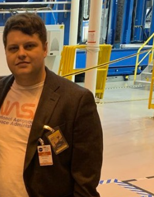

- I have always loved the idea that something disruptive can come simply from welcoming a difference.
Currently pursuing a BS in Software Engineering at Mississippi State University. My Interests include software development, open source software,and machine learning with a focus on wireless communications. I plan to pursue a PhD program at Mississippi State University starting in the Spring of 2023, where i will continue my research into the future of wireless communications.
I am currently involved in two NSF funded projects:
AERPAW NSF Award #1939334 Overview
OAIC NSF Award #2016724 Overview
- Software Development as a team
- Software Development Life Cycle (SDLC)
- Real-Time Operating Systems (RTOS)
- Software Design
- Neural Networks
- Application Development
- Machine Learning
- Linux administration
- Database Management
- Agile Methodologies
- Heroku for deploying applications
- Version Control using Git
- Software Testing (Continuous integration, code-coverage, unit testing)
Programming Languages: C, C++, Go, Python, HTML, CSS, JS
Familiar in: Socket Programming (Unix), Systems Programming in C, Docker, Helm, Kubernetes,Virtual Machines / Emulation, Custom Kernel configurations.
CTF experience using methods such as SQL Injection, etc.
Frameworks: Flask, React
Familiar with top python machine learning libraries such as scikit.
Mississippi State University - Starkville, Ms
Bachelors of Science: Software Engineering
Aug 2020 - Dec 2022
Undergraduate Research Assistant at AERPAW MSU
• Creating an open-source testbed for 5g/beyond Software Driven Radio (SDR) applications.
• Developed 10 applications to assist with troubleshooting various difficulties of wireless testbeds.
MSU IEEE Student Chapter Web Master
Founder of Open Source Software Group at MSU
Hinds Community College - Pearl, Ms
Associates: General Studies
May 2018 - May 2020
Hinds Community College Rankin Honors Program
• 40 hours of community service each semester from 2018 – 2020
• Organized local blood drive where over 200 people gave blood 2019